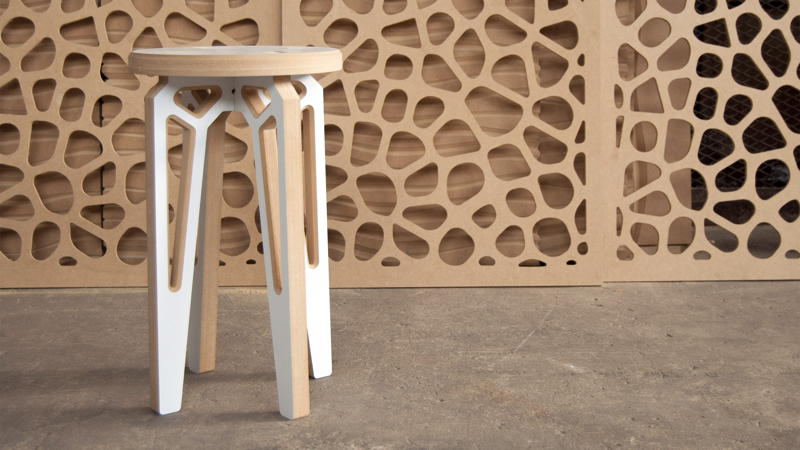
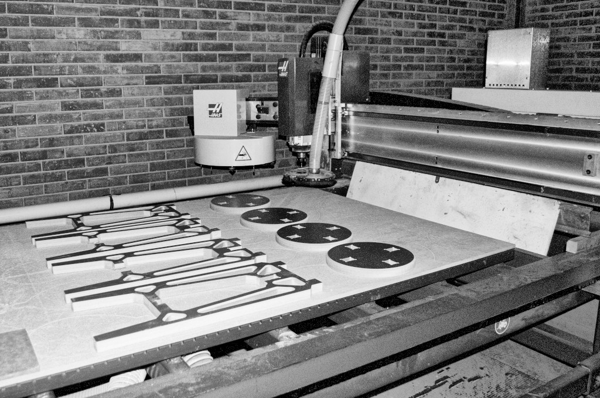
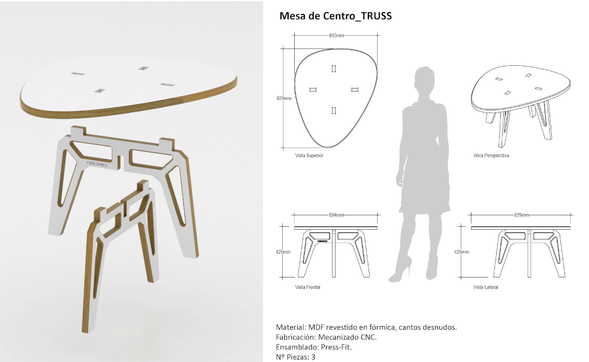
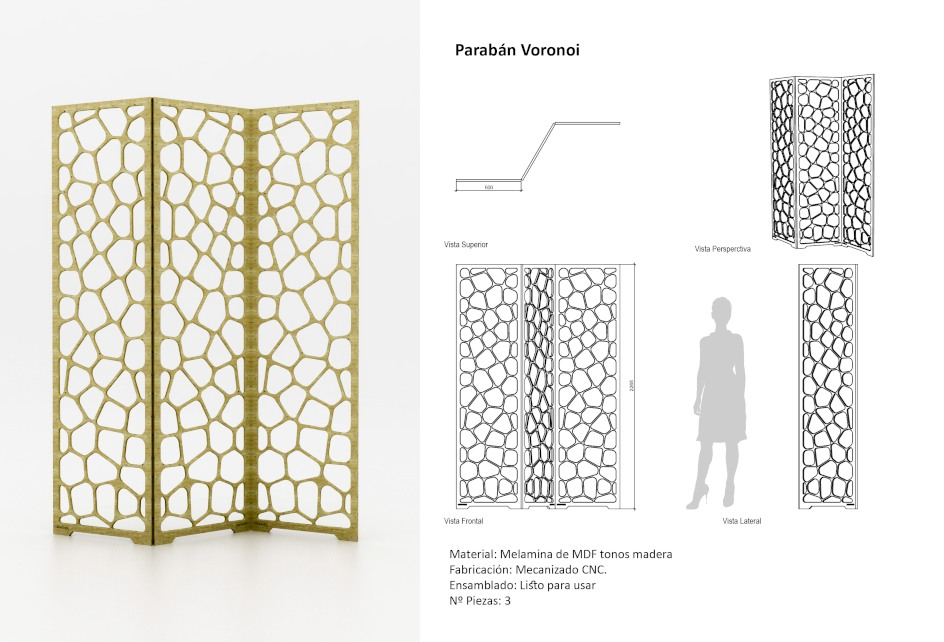
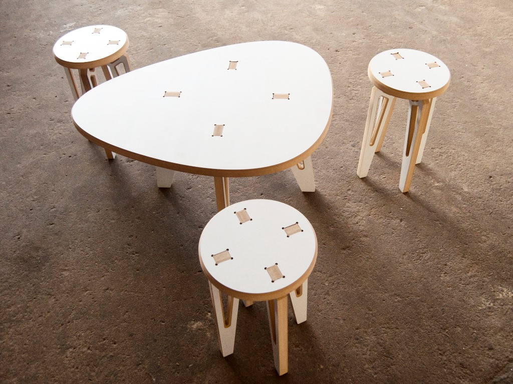
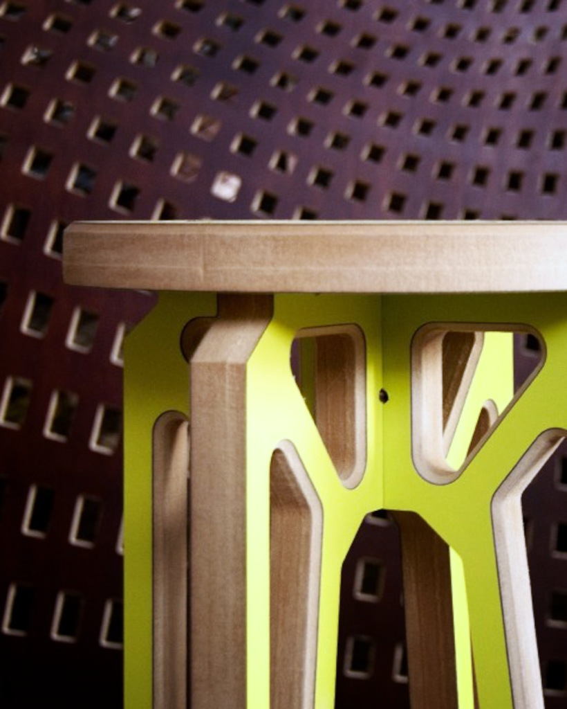

FROM GEOMETRY TO OBJECT
Exploring how digital ideas become material.
DESIGN[IO] · Truss & Voronoi · 2014 · Caracas

THE EXPLORATION
How could digital fabrication move from technique to design method?
Furniture became a testing ground for translating geometric ideas into physical objects, linking form, fabrication and everyday use from the outset.
FORM THROUGH ITERATION
How could each constraint improve the next version?
The process moved between observation, sketches, digital models and physical prototypes. Each iteration refined proportion, fit and use, turning technical constraints into design decisions.
MY CONTRIBUTION
Co-design
Product development
Visual identity
Product photography
Use testing
Commercial outreach
Client communication
FROM FILE TO PART

Digital models were translated into CNC-cut components, with sheet layouts planned to maximize material use and reduce offcuts.
TRUSS / A CONSTRUCTION LANGUAGE
Across tables and stools, a shared logic of exposed edges, visible joints and press-fit assembly gave the family a consistent identity.

VORONOI / PATTERN AS SPATIAL FILTER
The workflow expanded from furniture to spatial elements, using CNC-cut patterns to explore permeability, material removal and visual separation.

READING THE DETAILS
01
Geometry
Patterns &
structural rules
02
Material
Sheet logic & exposed edges
03
Assembly
Press-fit logic

WHAT EMERGED?

The object became a way of thinking through process.
What began as a furniture experiment became a method: move between idea, model, material and prototype; let each constraint inform the next decision; allow fabrication to shape the final object rather than disappear behind it.